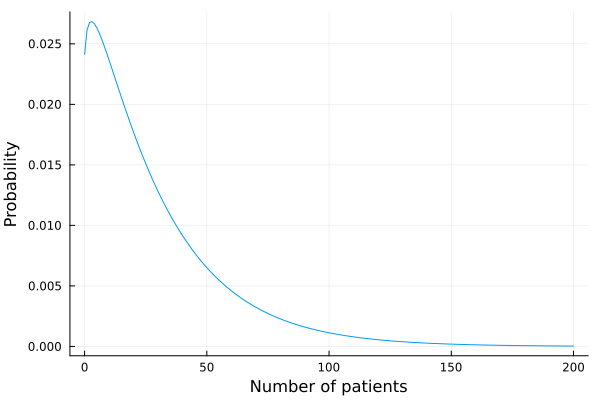
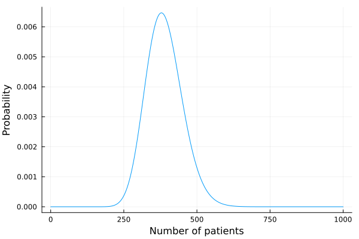
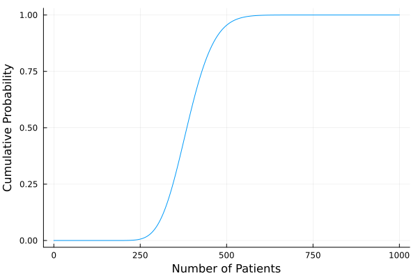
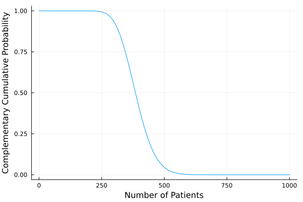
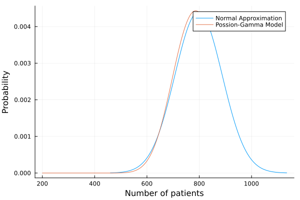

ClinicalTrialOptm.jl
The Problem
In the last five years, clinical trials have become increasingly more difficult to conduct due to staffing, budget, and protocol complications. According to the 2020 Tufts University Impact Report, more than 20% of clinical trials fail to recruit enough patients in time. Biomedical and phameceutical companies rely on trial data to progress in treatment development, making effective clinical trial design necessary to address.
ClinicalTrialOptm.jl solves these multi-center, multi-state recruitment problems using mixed-integer algorithms. It seeks to optimize the number of clinics for each country, minimizing cost while maintaining high probabilities of successful recruitment. Details on the calculations are described in the paper: (paper not finished yet)
Installation
ClinicalTrialOptm.jl requires Julia v1.7 or later. The package has not been registered yet and must be installed using the repository location. To do so, start Julia and use the ] key to switch to the package manager REPL:
(@v1.8) Pkg> add https://github.com/Hua-Zhou/ClinicalTrialOptm.jl.gitUse the backspace key to return to the Julia REPL.
versioninfo()Julia Version 1.8.1
Commit afb6c60d69a (2022-09-06 15:09 UTC)
Platform Info:
OS: macOS (arm64-apple-darwin21.5.0)
CPU: 8 × Apple M1
WORD_SIZE: 64
LIBM: libopenlibm
LLVM: libLLVM-13.0.1 (ORCJIT, apple-m1)
Threads: 4 on 4 virtual cores
Environment:
JULIA_NUM_THREADS = 4# for use in this tutorial
using ClinicalTrialOptm
using Distributions, HiGHS, SCS, Pajarito, SCIP, MathOptInterface, JuMP, Plots, StatsPlots
const MOI = MathOptInterface;Inputting Parameters
There are two types of data structs within this package: Country and ClinicalTrial:
Country
ClinicalTrialOptm.Country — TypeCountry(
m :: T,
s² :: T,
l :: Integer,
u :: Integer,
c₀ :: T,
c :: T,
q :: T,
d :: T,
T₀ :: Distribution{Univariate, Continuous},
Td :: T
)Stores parameters for a country's centers.
Arguments
m: expected mean enrollment rates in countrys²: variances of enrollment rates in countryl: lower bound of centers in countryu: upper bound of centers in countryc₀: cost of initializing one center in countryc: cost of running one center in country per unit of timeq: cost of one enrolled patient in countryd: probability of an enrolled patient dropping out in countryT₀: distribution of center initialization time in countryTd: duration of clinical trial
Example use:
m = 1.5
s² = 2.0
l, u = 0, 10
c₀ = 20_000.0
c = 5_000.0
q = 1_500.0
d = 0.05
T₀ = Uniform(0.0, 6.0)
Td = 24.0
ctry = Country(m, s², l, u, c₀, c, q, d, T₀, Td)Country{Float64}(1.5, 2.0, 0, 10, 20000.0, 5000.0, 1500.0, 0.05, Uniform{Float64}(a=0.0, b=6.0), 24.0)ClinicalTrial
ClinicalTrialOptm.ClinicalTrial — TypeClinicalTrial(
m :: AbstractVector{T},
s² :: AbstractVector{T},
l :: AbstractVector{<:Integer},
u :: AbstractVector{<:Integer},
c₀ :: AbstractVector{T},
c :: AbstractVector{T},
q :: AbstractVector{T},
d :: AbstractVector{T},
T₀ :: AbstractVector{TD},
Td :: T,
centers = zeros(Int, length(m)),
ntarget = 0
)Store parameters for a clinical trial.
Arguments
m: expected mean enrollment rates in countrys²: variances of enrollment rates in countryl: lower bound of centers in countryu: upper bound of centers in countryc₀: cost of initializing one center in countryc: cost of running one center in country per unit of timeq: cost of one enrolled patient in countryd: probability of an enrolled patient dropping out in countryT₀: distribution of center initialization time in countryTd: duration of clinical trialcenters: number of centers in each country for the optimal trial designntarget: target enrollment of patients
When inputting values, each parameter's index must corresponding with the other country values. Be sure to verify your values with the displayed table before applying the solver.
Example use:
m = [1, 1.2, 1.4, 1.2]
s² = [0.2, 0.4, 0.8, 0.6]
l = [0, 3, 2, 1]
u = [8, 5, 7, 4]
c₀ = [15000.0, 13000.0, 16000.0, 17000.0]
c = [3000.0, 2000.0, 5000.0, 8000.0]
q = [1000.0, 1300.0, 900.0, 800.0]
d = [0.01, 0.05, 0.09, 0.15]
T₀ = fill(Uniform(0.0, 6.0), 4)
Td = 24.0
ct = ClinicalTrial(m, s², l, u, c₀, c, q, d, T₀, Td)Global Clinical Trial:
Optimal center assignment not computed.
┌─────────┬─────────┬────────┬────────────┬────────────────┬──────────────┬───────────────┬──────────────┬──────────────┬─────────┐
│[1m Country [0m│[1m mean(λ) [0m│[1m var(λ) [0m│[1m init. cost [0m│[1m maint. cost [0m│[1m enroll. cost [0m│[1m drop out rate [0m│[1m min. centers [0m│[1m max. centers [0m│[1m centers [0m│
│[90m [0m│[90m [0m│[90m [0m│[90m $/center [0m│[90m $/center/month [0m│[90m $/patient [0m│[90m [0m│[90m [0m│[90m [0m│[90m [0m│
├─────────┼─────────┼────────┼────────────┼────────────────┼──────────────┼───────────────┼──────────────┼──────────────┼─────────┤
│ 1 │ 1.00 │ 0.20 │ 15000 │ 3000 │ 1000 │ 0.01 │ 0 │ 8 │ NA │
│ 2 │ 1.20 │ 0.40 │ 13000 │ 2000 │ 1300 │ 0.05 │ 3 │ 5 │ NA │
│ 3 │ 1.40 │ 0.80 │ 16000 │ 5000 │ 900 │ 0.09 │ 2 │ 7 │ NA │
│ 4 │ 1.20 │ 0.60 │ 17000 │ 8000 │ 800 │ 0.15 │ 1 │ 4 │ NA │
└─────────┴─────────┴────────┴────────────┴────────────────┴──────────────┴───────────────┴──────────────┴──────────────┴─────────┘Using optdes!
ClinicalTrialOptm.optdes! — Functionoptdes!(ct :: ClinicalTrial, ntarget :: Integer, ps :: Real, solver)Find the optimal clinical trial design, with ntarget enrollment and guaranteed probability of success ps.
The solver can be changed to the user's preferance by setting solver equal to your solver choice (see documentation page for examples). The function overwrites ct.centers by the optimal solution.
See also lbtest, ubtest, ClinicalTrial
Example use:
# input parameters
m = [1, 1.2, 1.4, 1.2]
s² = [0.2, 0.4, 0.8, 0.6]
l = [0, 3, 2, 1]
u = [8, 5, 7, 4]
c₀ = [15000.0, 13000.0, 16000.0, 17000.0]
c = [3000.0, 2000.0, 5000.0, 8000.0]
q = [1000.0, 1300.0, 900.0, 800.0]
d = [0.01, 0.05, 0.09, 0.15]
T₀ = fill(Uniform(0.0, 6.0), 4)
Td = 24.0
ct = ClinicalTrial(m, s², l, u, c₀, c, q, d, T₀, Td)
optdes!(ct, 400, ps = 0.85)Lower bound probability of success: 1.1138624195141726e-11
The optimal solution is not the lower bound of the centers.
Upper bound probability of success: 0.9878987929122786
The optimal solution is feasible.
2.427250 seconds (6.64 M allocations: 356.902 MiB, 1.82% gc time, 99.28% compilation time: 25% of which was recompilation)
solution_summary(model) = * Solver : SCIP
* Status
Result count : 4
Termination status : OPTIMAL
Message from the solver:
"SCIP_STATUS_OPTIMAL"
* Candidate solution (result #1)
Primal status : FEASIBLE_POINT
Dual status : NO_SOLUTION
Objective value : 2.29354e+06
Objective bound : 2.29354e+06
Relative gap : 0.00000e+00
* Work counters
Solve time (sec) : 8.66800e-03
Simplex iterations : 8
Node count : 1
termination_status(model) = MathOptInterface.OPTIMAL
primal_status(model) = MathOptInterface.FEASIBLE_POINT
objective_value(model) = 2.293537599999999e6
Global Clinical Trial:
Optimal center assignment calculated.
An optimal solution has been found.
Total duration (months): 24.0
Target enrollment: 400
Probability of success (based on normal approximation): 0.8587747637053408
Probability of success (based on Poisson-Gamma model): 0.8598777881463103
Expected cost ($): 2.2935376e6
┌─────────┬─────────┬────────┬────────────┬────────────────┬──────────────┬───────────────┬──────────────┬──────────────┬─────────┐
│[1m Country [0m│[1m mean(λ) [0m│[1m var(λ) [0m│[1m init. cost [0m│[1m maint. cost [0m│[1m enroll. cost [0m│[1m drop out rate [0m│[1m min. centers [0m│[1m max. centers [0m│[1m centers [0m│
│[90m [0m│[90m [0m│[90m [0m│[90m $/center [0m│[90m $/center/month [0m│[90m $/patient [0m│[90m [0m│[90m [0m│[90m [0m│[90m [0m│
├─────────┼─────────┼────────┼────────────┼────────────────┼──────────────┼───────────────┼──────────────┼──────────────┼─────────┤
│ 1 │ 1.00 │ 0.20 │ 15000 │ 3000 │ 1000 │ 0.01 │ 0 │ 8 │ 8 │
│ 2 │ 1.20 │ 0.40 │ 13000 │ 2000 │ 1300 │ 0.05 │ 3 │ 5 │ 5 │
│ 3 │ 1.40 │ 0.80 │ 16000 │ 5000 │ 900 │ 0.09 │ 2 │ 7 │ 6 │
│ 4 │ 1.20 │ 0.60 │ 17000 │ 8000 │ 800 │ 0.15 │ 1 │ 4 │ 1 │
└─────────┴─────────┴────────┴────────────┴────────────────┴──────────────┴───────────────┴──────────────┴──────────────┴─────────┘optdes! uses the normal approximation of the probability of success (PoS) to compute solutions, however the Poisson-Gamma model probability is displayed because it is the more accurate estimation of the PoS. If the Poisson-Gamma model PoS is less than the normal approximation PoS, then a warning will be outputted to let users know.
Example:
optdes!(ct, 300, ps = 0.73)Lower bound probability of success: 2.57712065043568e-5
The optimal solution is not the lower bound of the centers.
Upper bound probability of success: 0.999879502628558
The optimal solution is feasible.
0.013808 seconds (1.48 k allocations: 51.547 KiB)
solution_summary(model) = * Solver : SCIP
* Status
Result count : 3
Termination status : OPTIMAL
Message from the solver:
"SCIP_STATUS_GAPLIMIT"
* Candidate solution (result #1)
Primal status : FEASIBLE_POINT
Dual status : NO_SOLUTION
Objective value : 1.61443e+06
Objective bound : 1.61289e+06
Relative gap : 9.59704e-04
* Work counters
Solve time (sec) : 7.47200e-03
Simplex iterations : 18
Node count : 1
termination_status(model) = MathOptInterface.OPTIMAL
primal_status(model) = MathOptInterface.FEASIBLE_POINT
objective_value(model) = 1.6144332000000002e6
Global Clinical Trial:
Optimal center assignment calculated.
An optimal solution has been found.
Total duration (months): 24.0
Target enrollment: 300
Probability of success (based on normal approximation): 0.7852131181816588
Probability of success (based on Poisson-Gamma model): 0.7772523002943241
WARNING: Probability of success used in optimization is lower than actual. Consider adjusting it.
Expected cost ($): 1.6144332e6
┌─────────┬─────────┬────────┬────────────┬────────────────┬──────────────┬───────────────┬──────────────┬──────────────┬─────────┐
│[1m Country [0m│[1m mean(λ) [0m│[1m var(λ) [0m│[1m init. cost [0m│[1m maint. cost [0m│[1m enroll. cost [0m│[1m drop out rate [0m│[1m min. centers [0m│[1m max. centers [0m│[1m centers [0m│
│[90m [0m│[90m [0m│[90m [0m│[90m $/center [0m│[90m $/center/month [0m│[90m $/patient [0m│[90m [0m│[90m [0m│[90m [0m│[90m [0m│
├─────────┼─────────┼────────┼────────────┼────────────────┼──────────────┼───────────────┼──────────────┼──────────────┼─────────┤
│ 1 │ 1.00 │ 0.20 │ 15000 │ 3000 │ 1000 │ 0.01 │ 0 │ 8 │ 7 │
│ 2 │ 1.20 │ 0.40 │ 13000 │ 2000 │ 1300 │ 0.05 │ 3 │ 5 │ 5 │
│ 3 │ 1.40 │ 0.80 │ 16000 │ 5000 │ 900 │ 0.09 │ 2 │ 7 │ 2 │
│ 4 │ 1.20 │ 0.60 │ 17000 │ 8000 │ 800 │ 0.15 │ 1 │ 4 │ 1 │
└─────────┴─────────┴────────┴────────────┴────────────────┴──────────────┴───────────────┴──────────────┴──────────────┴─────────┘Solver Options
optdes! uses Pajarito.jl to solve convex cases (when ps < 0.5) and switches to SCIP.jl for non-convex cases (when ps ≥ 0.5). The exact specifications are listed below.
# Pajarito solver
oa_solver = optimizer_with_attributes(HiGHS.Optimizer,
MOI.Silent() => true,
"mip_feasibility_tolerance" => 1e-8,
"mip_rel_gap" => 1e-6,
)
conic_solver = optimizer_with_attributes(SCS.Optimizer,
MOI.Silent() => true,
)
convex_default_solver = optimizer_with_attributes(Pajarito.Optimizer,
"time_limit" => 600,
"oa_solver" => oa_solver,
"conic_solver" => conic_solver,
"tol_rel_gap" => 0.001
)
# SCIP solver
nonconvex_default_solver = optimizer_with_attributes(
SCIP.Optimizer, "display/verblevel"=>0, "limits/gap"=>0.001
);As stated in the documentation, users can change the solver to their preference by specifying it in the solver argument. Here is an example using the KNITRO solver.
knitro_solver = optimizer_with_attributes(
KNITRO.Optimizer,
"mip_opt_gap_rel" => 0.001
)
optdes!(ct, 300, ps = 0.8, solver = knitro_solver)Other Functions
ClinicalTrialOptm.jl contains numerous other functions for patient amounts, cost, and probabilities of countries and clinical trials.
# for example uses
m = 1.5
s² = 2.0
l, u = 0, 10
c₀ = 20_000.0
c = 5_000.0
q = 1_500.0
d = 0.05
T₀ = Uniform(0.0, 6.0)
Td = 24.0
ctry = Country(m, s², l, u, c₀, c, q, d, T₀, Td)
m = [1, 1.2, 1.4, 1.2]
s² = [0.2, 0.4, 0.8, 0.6]
l = [0, 3, 2, 1]
u = [8, 5, 7, 4]
c₀ = [15000.0, 13000.0, 16000.0, 17000.0]
c = [3000.0, 2000.0, 5000.0, 8000.0]
q = [1000.0, 1300.0, 900.0, 800.0]
d = [0.01, 0.05, 0.09, 0.15]
T₀ = fill(Uniform(0.0, 6.0), 4)
Td = 24.0
centers = [2, 4, 7, 3]
ct = ClinicalTrial(m, s², l, u, c₀, c, q, d, T₀, Td, centers);mean
Statistics.mean — Functionmean(itr)Compute the mean of all elements in a collection.
If itr contains NaN or missing values, the result is also NaN or missing (missing takes precedence if array contains both). Use the skipmissing function to omit missing entries and compute the mean of non-missing values.
Examples
julia> using Statistics
julia> mean(1:20)
10.5
julia> mean([1, missing, 3])
missing
julia> mean(skipmissing([1, missing, 3]))
2.0mean(f::Function, itr)Apply the function f to each element of collection itr and take the mean.
julia> using Statistics
julia> mean(√, [1, 2, 3])
1.3820881233139908
julia> mean([√1, √2, √3])
1.3820881233139908mean(f::Function, A::AbstractArray; dims)Apply the function f to each element of array A and take the mean over dimensions dims.
This method requires at least Julia 1.3.
julia> using Statistics
julia> mean(√, [1, 2, 3])
1.3820881233139908
julia> mean([√1, √2, √3])
1.3820881233139908
julia> mean(√, [1 2 3; 4 5 6], dims=2)
2×1 Matrix{Float64}:
1.3820881233139908
2.2285192400943226mean(A::AbstractArray; dims)Compute the mean of an array over the given dimensions.
mean for empty arrays requires at least Julia 1.1.
Examples
julia> using Statistics
julia> A = [1 2; 3 4]
2×2 Matrix{Int64}:
1 2
3 4
julia> mean(A, dims=1)
1×2 Matrix{Float64}:
2.0 3.0
julia> mean(A, dims=2)
2×1 Matrix{Float64}:
1.5
3.5mean(A::AbstractArray, w::AbstractWeights[, dims::Int])Compute the weighted mean of array A with weight vector w (of type AbstractWeights). If dim is provided, compute the weighted mean along dimension dims.
Examples
n = 20
x = rand(n)
w = rand(n)
mean(x, weights(w))mean(d::UnivariateDistribution)Compute the expectation.
mean(d::MultivariateDistribution)Compute the mean vector of distribution d.
mean(d::MatrixDistribution)Return the mean matrix of d.
mean(d::Union{UnivariateMixture, MultivariateMixture})Compute the overall mean (expectation).
mean(ctry :: Country)Calculate the mean number of patients enrolled by a center in country ctry.
mean(ct :: ClinicalTrial)Compute the mean number of patients enrolled in a clinical trial ct.
Example uses:
mean(ctry)29.924999999999997mean(ct)388.878var
Statistics.var — Functionvar(itr; corrected::Bool=true, mean=nothing[, dims])Compute the sample variance of collection itr.
The algorithm returns an estimator of the generative distribution's variance under the assumption that each entry of itr is a sample drawn from the same unknown distribution, with the samples uncorrelated. For arrays, this computation is equivalent to calculating sum((itr .- mean(itr)).^2) / (length(itr) - 1)). If corrected is true, then the sum is scaled with n-1, whereas the sum is scaled with n if corrected is false where n is the number of elements in itr.
If itr is an AbstractArray, dims can be provided to compute the variance over dimensions.
A pre-computed mean may be provided. When dims is specified, mean must be an array with the same shape as mean(itr, dims=dims) (additional trailing singleton dimensions are allowed).
If array contains NaN or missing values, the result is also NaN or missing (missing takes precedence if array contains both). Use the skipmissing function to omit missing entries and compute the variance of non-missing values.
var(x::AbstractArray, w::AbstractWeights, [dim]; mean=nothing, corrected=false)Compute the variance of a real-valued array x, optionally over a dimension dim. Observations in x are weighted using weight vector w. The uncorrected (when corrected=false) sample variance is defined as:
\[\frac{1}{\sum{w}} \sum_{i=1}^n {w_i\left({x_i - μ}\right)^2 }\]
where $n$ is the length of the input and $μ$ is the mean. The unbiased estimate (when corrected=true) of the population variance is computed by replacing $\frac{1}{\sum{w}}$ with a factor dependent on the type of weights used:
AnalyticWeights: $\frac{1}{\sum w - \sum {w^2} / \sum w}$FrequencyWeights: $\frac{1}{\sum{w} - 1}$ProbabilityWeights: $\frac{n}{(n - 1) \sum w}$ where $n$ equalscount(!iszero, w)Weights:ArgumentError(bias correction not supported)
var(ce::CovarianceEstimator, x::AbstractVector; mean=nothing)Compute the variance of the vector x using the estimator ce.
var(d::UnivariateDistribution)Compute the variance. (A generic std is provided as std(d) = sqrt(var(d)))
var(d::MultivariateDistribution)Compute the vector of element-wise variances for distribution d.
var(d::MatrixDistribution)Compute the matrix of element-wise variances for distribution d.
var(d::UnivariateMixture)Compute the overall variance (only for UnivariateMixture).
var(ctry :: Country)Calculate the variance of the number of patients enrolled by a center in country ctry.
var(ct :: ClinicalTrial)Compute the variance of the number of patients enrolled a clinical trial ct.
Example uses:
var(ctry)837.436875var(ct)3905.413596mean_cost
ClinicalTrialOptm.mean_cost — Functionmean_cost(ctry :: Country)Calculate the mean cost of a center in country ctry.
Example use:
mean_cost(ctry)169887.5pgf
ClinicalTrialOptm.pgf — Functionpgf(ctry :: Country, z)Calculate the probability generating function of the number of patients enrolled by one center in country ctry.
See also pmf
pgf(ct :: ClinicalTrial, z)Compute the probability generating function of the number of patients enrolled in a clinical trial ct.
See also pmf
Example uses:
pgf(ctry, 1.0)1.0pgf(ct, 1.0)1.0pmf
ClinicalTrialOptm.pmf — Functionpmf(ctry :: Country)Calculate the probability mass function of the number of patients enrolled in a center in country ctry, by Fast Fourier transform of its pgf.
See also pgf
pmf(ct :: ClinicalTrial)Compute the probability mass function of the number of patients enrolled in a clinical trial ct, by a Fast Fourier Transform of its pgf.
See also pgf
Example uses:
ctry_pmf = pmf(ctry)
pltrange = 0:200
x = pltrange
y = ctry_pmf[pltrange .+ 1]
plot(x, y, xlabel = "Number of patients", ylabel = "Probability", legend = false)
ct_pmf = pmf(ct)
pltrange = 0:1000
x = pltrange
y = ct_pmf[pltrange .+ 1]
plot(x, y, xlabel = "Number of patients", ylabel = "Probability", legend = false)
cdf
Distributions.cdf — Functioncdf(d::Skellam, t::Real)Implementation based on SciPy: https://github.com/scipy/scipy/blob/v0.15.1/scipy/stats/discretedistns.py
Refer to Eqn (5) in On an Extension of the Connexion Between Poisson and χ2 Distributions, N.L Johnson(1959) Vol 46, No 3/4, doi:10.2307/2333532 It relates the Skellam and Non-central chisquare PDFs, which is very similar to their CDFs computation as well.
Computing cdf of the Skellam distribution.
cdf(ct :: ClinicalTrial, x :: Real)Compute the cumulative distribution function of the number of patients enrolled in a clinical trial ct evaluated at x, P(X ≤ x), by applying the Gil-Pelaez inversion formula (https://en.wikipedia.org/wiki/Characteristic_function_(probability_theory)#Inversion_formula) to the characteristic function.
See also ccdf
Example use:
x = [0:1:1000;]
y = Vector{Float64}(undef, 1001)
for n in 1:1001
y[n] = cdf(ct, n - 1)
end
plot(x, y, xlabel = "Number of Patients", ylabel = "Cumulative Probability", legend = false)
ccdf
Distributions.ccdf — Functionccdf(d::UnivariateDistribution, x::Real)The complementary cumulative function evaluated at x, i.e. 1 - cdf(d, x).
ccdf(ct :: ClinicalTrial, x :: Real)Compute the complementary distribution function of the number of patients enrolled in a clinical trial ct evaluated by 1 - cdf(ct, x).
See also cdf
Example use:
x = [0:1:1000;]
y = Vector{Float64}(undef, 1001)
for n in 1:1001
y[n] = ccdf(ct, n - 1)
end
plot(x, y, xlabel = "Number of Patients", ylabel = "Complementary Cumulative Probability",
legend = false)
Example Case
With individual examples shown for all functions in the package, here is an example workflow of ClinicalTrialOptm.jl using estimated parameters.
m = [1, 1.2, 1.4, 1.9]
s² = [1.5, 1.7, 1.3, 1.1]
l = [0, 4, 2, 1]
u = [10, 24, 20, 15]
c₀ = [19000.0, 15000.0, 14000.0, 16000.0]
c = [7000.0, 5000.0, 5000.0, 6000.0]
q = [1000.0, 2000.0, 1500.0, 1600.0]
d = [0.10, 0.09, 0.04, 0.07]
T₀ = fill(Uniform(0.0, 6.0), 4)
Td = 12.0
ct = ClinicalTrial(m, s², l, u, c₀, c, q, d, T₀, Td)Global Clinical Trial:
Optimal center assignment not computed.
┌─────────┬─────────┬────────┬────────────┬────────────────┬──────────────┬───────────────┬──────────────┬──────────────┬─────────┐
│[1m Country [0m│[1m mean(λ) [0m│[1m var(λ) [0m│[1m init. cost [0m│[1m maint. cost [0m│[1m enroll. cost [0m│[1m drop out rate [0m│[1m min. centers [0m│[1m max. centers [0m│[1m centers [0m│
│[90m [0m│[90m [0m│[90m [0m│[90m $/center [0m│[90m $/center/month [0m│[90m $/patient [0m│[90m [0m│[90m [0m│[90m [0m│[90m [0m│
├─────────┼─────────┼────────┼────────────┼────────────────┼──────────────┼───────────────┼──────────────┼──────────────┼─────────┤
│ 1 │ 1.00 │ 1.50 │ 19000 │ 7000 │ 1000 │ 0.10 │ 0 │ 10 │ NA │
│ 2 │ 1.20 │ 1.70 │ 15000 │ 5000 │ 2000 │ 0.09 │ 4 │ 24 │ NA │
│ 3 │ 1.40 │ 1.30 │ 14000 │ 5000 │ 1500 │ 0.04 │ 2 │ 20 │ NA │
│ 4 │ 1.90 │ 1.10 │ 16000 │ 6000 │ 1600 │ 0.07 │ 1 │ 15 │ NA │
└─────────┴─────────┴────────┴────────────┴────────────────┴──────────────┴───────────────┴──────────────┴──────────────┴─────────┘Solving for the optimal trial design:
optdes!(ct, 400, ps = 0.95)Lower bound probability of success: 7.112034326831168e-28
The optimal solution is not the lower bound of the centers.
Upper bound probability of success: 0.9999940867534107
The optimal solution is feasible.
0.026162 seconds (2.16 k allocations: 57.289 KiB)
solution_summary(model) = * Solver : SCIP
* Status
Result count : 7
Termination status : OPTIMAL
Message from the solver:
"SCIP_STATUS_OPTIMAL"
* Candidate solution (result #1)
Primal status : FEASIBLE_POINT
Dual status : NO_SOLUTION
Objective value : 3.27739e+06
Objective bound : 3.27739e+06
Relative gap : 0.00000e+00
* Work counters
Solve time (sec) : 2.14900e-02
Simplex iterations : 89
Node count : 28
termination_status(model) = MathOptInterface.OPTIMAL
primal_status(model) = MathOptInterface.FEASIBLE_POINT
objective_value(model) = 3.277387200000001e6
Global Clinical Trial:
Optimal center assignment calculated.
An optimal solution has been found.
Total duration (months): 12.0
Target enrollment: 400
Probability of success (based on normal approximation): 0.9550669693996681
Probability of success (based on Poisson-Gamma model): 0.9636054293917478
Expected cost ($): 3.2773872e6
┌─────────┬─────────┬────────┬────────────┬────────────────┬──────────────┬───────────────┬──────────────┬──────────────┬─────────┐
│[1m Country [0m│[1m mean(λ) [0m│[1m var(λ) [0m│[1m init. cost [0m│[1m maint. cost [0m│[1m enroll. cost [0m│[1m drop out rate [0m│[1m min. centers [0m│[1m max. centers [0m│[1m centers [0m│
│[90m [0m│[90m [0m│[90m [0m│[90m $/center [0m│[90m $/center/month [0m│[90m $/patient [0m│[90m [0m│[90m [0m│[90m [0m│[90m [0m│
├─────────┼─────────┼────────┼────────────┼────────────────┼──────────────┼───────────────┼──────────────┼──────────────┼─────────┤
│ 1 │ 1.00 │ 1.50 │ 19000 │ 7000 │ 1000 │ 0.10 │ 0 │ 10 │ 0 │
│ 2 │ 1.20 │ 1.70 │ 15000 │ 5000 │ 2000 │ 0.09 │ 4 │ 24 │ 5 │
│ 3 │ 1.40 │ 1.30 │ 14000 │ 5000 │ 1500 │ 0.04 │ 2 │ 20 │ 20 │
│ 4 │ 1.90 │ 1.10 │ 16000 │ 6000 │ 1600 │ 0.07 │ 1 │ 15 │ 14 │
└─────────┴─────────┴────────┴────────────┴────────────────┴──────────────┴───────────────┴──────────────┴──────────────┴─────────┘From optdes!, we determine that 0 centers should be placed in country 1, 5 centers should be placed in country 2, 20 in country 3, and 14 in country 4 to minimize the trial cost and ensure a high success rate with recruitment.
We can also visualize how the normal approximation of total patient recruitment compares to the more accurate Poisson-Gamma model by plotting the normal distribution, with mean(ct) and var(ct), against pmf(ct).
# normal approximation
μ = mean(ct)
σ = sqrt(var(ct))
plot(Normal(μ, σ), label = "Normal Approximation")
# adding the poisson-gamma model
ct_pmf = pmf(ct)
pltrange = 200:800
x = pltrange
y = ct_pmf[pltrange .+ 1]
plot!(x, y, xlabel = "Number of patients", ylabel = "Probability",
label = "Possion-Gamma Model")
From the graph, the functions are very similar, demonstrating that the normal approximation works well in calculating the patient enrollment.